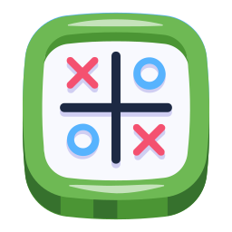

Jogo da Velha
É um jogo de regras extremamente simples, que não traz grandes dificuldades para seus jogadores e é facilmente aprendido. O jogo é jogado em um tabuleiro de dimensões 3x3, onde dois jogadores disputam para completar uma linha com suas respectivas peças. O jogador que conseguir completar uma linha primeiro, vence a partida.
JogarCampo Minado
É um jogo de tabuleiro composto por casas, onde o jogador deve descobrir onde estão as minas sem acioná-las. O jogo é jogado em um tabuleiro de dimensões 10x10, onde o jogador deve clicar nas casas para descobrir onde estão as minas. O jogador que conseguir descobrir todas as minas, vence a partida.
JogarAdivinhação
É um jogo de adivinhação de números, onde o jogador deve adivinhar um número aleatório gerado pelo computador. O jogador deve adivinhar o número correto em até 10 tentativas. O jogador que conseguir adivinhar o número correto, vence a partida.
Jogar- 

Jogos OnGames.com
História Jogo da Velha
O jogo da velha, uma das formas mais antigas de entretenimento, remonta a milhares de anos. Embora suas origens exatas sejam incertas, registros sugerem sua existência desde o antigo Egito, Grécia ou Roma. A versão moderna evoluiu na Europa no século XIX e espalhou-se globalmente como um passatempo popular e educacional, valorizado por sua simplicidade e desafios estratégicos. Hoje, o jogo da velha continua sendo apreciado como uma forma de diversão simples e mentalmente estimulante em todo o mundo.
Regras Jogo da Velha
Tabuleiro: O jogo é jogado em um tabuleiro de 3x3 quadrados.
Jogadores: O jogo é jogado por dois jogadores, geralmente representados por "X" e "O".
Objetivo: O objetivo de cada jogador é colocar três de suas marcas em linha reta (horizontal, vertical ou diagonal) no tabuleiro, ou seja, conquistar uma linha, coluna ou diagonal completa antes do oponente.
Começando o jogo: Um jogador é escolhido aleatoriamente para começar. Geralmente, o jogador que joga com "X" começa o jogo.
Turnos dos jogadores: Os jogadores alternam turnos, colocando suas marcas em um quadrado vazio do tabuleiro em cada turno.
Colocando as marcas: Um jogador coloca sua marca em um quadrado vazio do tabuleiro em seu turno.
Final do jogo: O jogo termina quando um dos jogadores conquista uma linha, coluna ou diagonal completa, ou quando todos os quadrados do tabuleiro são preenchidos. Se todas as casas forem preenchidas sem que nenhum jogador consiga completar uma linha, coluna ou diagonal, o jogo é considerado um empate.
Declaração do vencedor: Se um jogador conseguir formar uma linha, coluna ou diagonal completa com suas marcas, ele é declarado vencedor. Se o jogo terminar em empate, nenhum jogador ganha.
História do Campo Minado
O Campo Minado começou como um jogo de tabuleiro e foi adaptado para computadores, estreando no Windows 3.1 em 1992. Originalmente, servia como uma ferramenta de treinamento militar para detectar minas terrestres. Desde então, tornou-se um clássico dos jogos de computador, desafiando os jogadores a evitar minas usando lógica e estratégia.
Regras do Campo Minado
Objetivo: O objetivo é revelar todas as casas sem minas no tabuleiro, evitando acionar qualquer mina.
Tabuleiro: O jogo é jogado em um tabuleiro retangular com casas que podem conter ou não minas.
Início do Jogo: O jogador seleciona uma casa para revelar no início do jogo.
Revelando Casas: As casas reveladas mostram um número, indicando quantas minas estão nas casas adjacentes.
Marcando Minas: O jogador pode marcar as casas suspeitas de conterem minas com uma bandeira.
Fim do Jogo: O jogo termina quando todas as casas sem minas são reveladas. Revelar uma mina encerra o jogo.
História da Adivinhação
O jogo de adivinhação é uma atividade antiga e simples, onde um jogador escolhe um número e os outros tentam adivinhá-lo, recebendo dicas sobre se o palpite é maior ou menor que o número escolhido. É um jogo de raciocínio e lógica que tem sido jogado por gerações em várias culturas ao redor do mundo.
Regras da Adivinhação
Objetivo: O objetivo é adivinhar um número aleatório gerado pelo computador em até 10 tentativas.
Início do Jogo: O jogador insere um número entre 1 e 100 para adivinhar o número gerado pelo computador.
Feedback: O computador informa se o número inserido é maior, menor ou igual ao número gerado.
Tentativas: O jogador tem até 10 tentativas para adivinhar o número correto.
Fim do Jogo: O jogo termina quando o jogador adivinha o número correto ou excede o limite de tentativas.